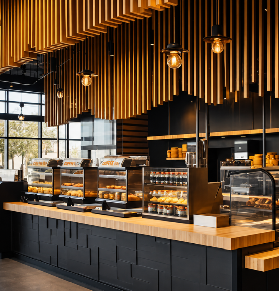
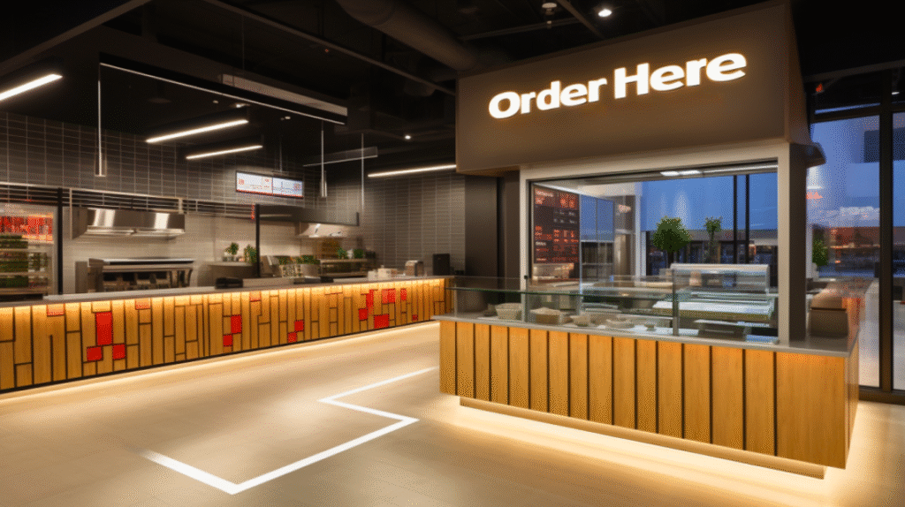
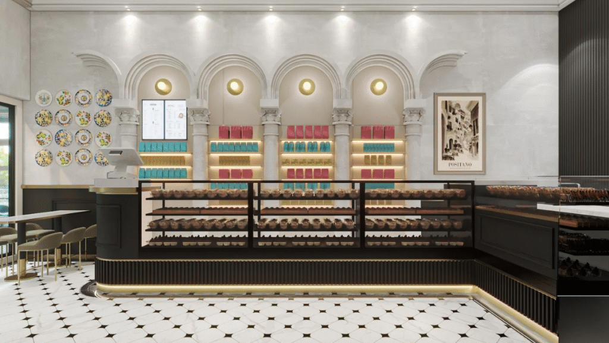
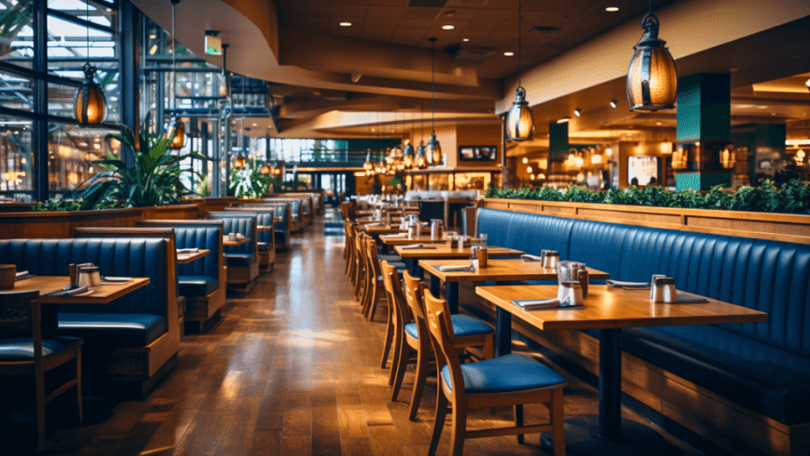
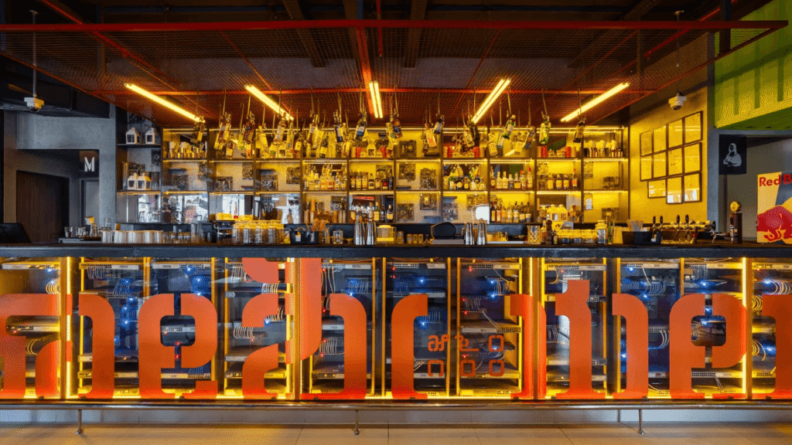

Introduction: The Power of What Customers See
Ever walked into a restaurant and instantly felt lost about where to order? Or sat at a table, only to realize you’re awkwardly facing the restroom?
These small details may seem insignificant, but they play a huge role in shaping customer experience, sales, and overall restaurant efficiency. In QSRs, what customers see—where they look first, how they navigate the space, and what catches their eye—directly impacts how much they order and how smoothly things run.
In this blog, we’ll break down:
- The First Impression – How to guide customers the moment they enter
- Menu Placement – Making sure high-margin items get noticed first
- Counter Design – Using the checkout area to drive impulse purchases
- Seating Areas – Creating comfort while keeping efficiency in mind
- Signage & Graphics – Reinforcing the right messages through visuals
Let’s dive in!
1. The First Impression: What Customers See When They Enter

Why It Matters
The first few seconds in a restaurant can make or break the customer experience. If they feel lost or confused, they might leave—or worse, take too long to order, slowing down operations.
How to Get It Right
- Guide Customers to the Counter or Menu Boards
- When customers walk in, they should immediately know where to order.
- Keep the pathway clear—avoid obstacles or design elements that block sightlines.
- Highlight the Best Items Right Away
- Place high-margin or bestselling items at their first glance.
- Example: Starbucks showcases seasonal drinks at the entrance, so they’re top of mind before ordering.
- Make Movement Intuitive
- Use floor markers, ceiling signs, or partitions to create a natural flow toward the counter.
- Avoid open, directionless spaces that force customers to guess where to go.
- Seating Should Never Be Near Washrooms
- No one wants to enjoy their meal with a direct view of the restroom.
- Place seating in a way that ensures comfort and privacy while keeping essential areas accessible.
Takeaway: Customers shouldn’t have to figure out where to go. Make navigation effortless from the moment they step in.
2. Menu Placement: The Science of Eye-Level Selling
Why It Matters
A cluttered menu can overwhelm customers, making them choose familiar (and often cheaper) items instead of the ones you want to push.
How to Get It Right
- Put High-Margin Items at Eye Level
- The top-middle section of the menu is where eyes naturally land first—this is prime real estate.
- Example: McDonald’s places its combo meals here to encourage upselling.
- Keep It Simple & Easy to Scan
- Too many choices slow people down. Group similar items, highlight bestsellers, and use bold text sparingly.
- Digital menus? Use slide transitions to spotlight limited-time offers.
Takeaway: Customers don’t study menus—they skim. Make sure they see what you want them to order first.
3. Counter Design: The Last-Minute Upsell Opportunity

Why It Matters
The counter isn’t just for payments—it’s your last chance to increase the bill size.
How to Get It Right
- Place Impulse Buys at Checkout
- Snacks, drinks, or small add-ons should be easy to grab while waiting.
- Example: Subway places chips and bottled drinks right next to the POS so customers instinctively add them.
- Use Clear Call-to-Actions (CTAs)
- Simple phrases like “Upgrade to a meal for ₹49 extra!” make decisions easier.
- Digital screens can showcase limited-time add-ons for better visibility.
Takeaway: The counter isn’t just for paying—it’s for selling. Make the most of it.
4. Seating Areas: Designing for Comfort & Flow

Why It Matters
Seating influences how long customers stay and how comfortable they feel.
How to Get It Right
- Match Seating to Your Business Model
- Fast-paced QSRs (like McDonald’s) use bright lighting and hard seating to encourage quick turnover.
- Cafés or premium fast-casual spots use soft lighting and cushioned seats to encourage longer stays (and more orders).
- Keep Restrooms Accessible—But Not Visible
- Customers should be able to find the restrooms without asking staff.
- But seating shouldn’t be positioned near them—nobody wants to eat next to a restroom door.
- Ensure Easy Navigation
- Make sure customers can clearly see where to get refills, dispose of trays, and exit.
Takeaway: Seating should balance comfort and efficiency—without awkward placements.
5. Signage & Graphics: Reinforcing Sightlines

Why It Matters
Poor signage leads to confusion, while strategic graphics can drive more sales.
How to Get It Right
- Use Directional Signs to Prevent Congestion
- Guide customers to kiosks, pickup stations, and exits with clear icons.
- Example: Taco Bell uses bold signage for pickup counters to prevent crowding.
- Layer Promotional Messaging
- Don’t just rely on the menu—place promotional stickers on tables, walls, or tray liners.
- Example: KFC uses tabletop stickers to remind customers about add-ons even after they’ve ordered.
Takeaway: Reinforce key messages across multiple touchpoints for better customer engagement.
Final Thoughts: Smart Sightlines = Higher Sales & Smoother Operations
Every decision in your QSR—from what customers see first to how they exit—should be intentional.
- Make navigation effortless with clear pathways & focal points
- Place high-margin items where they’re most visible
- Leverage counter space for impulse purchases
- Ensure seating & signage are strategically placed
When sightlines are optimized, customers order faster, service flows better, and revenue grows.
Want to maximize your QSR’s efficiency and profitability?
Let’s design smarter together! Contact us at info@sprint-co.com | Visit sprint-co.com